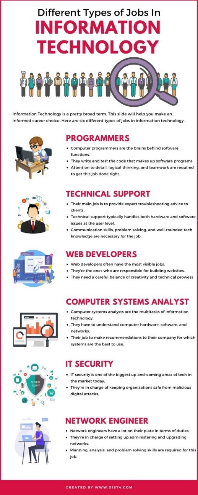

Ideal Job

As we can see , there are many streams of IT careers including, programming, support,
web development, computers systems analysis, IT security and network engineering. Interestingly,
each one of our group members’ ideal jobs falls under a different category.
To be an IT Operations manager, Liam will require an in depth knowledge of hardware,
operating systems and technology in general. He will need to research an organization's
requirements and organise rollouts of new technology, as well as software updates to existing technologies.
Xavier will also require an in depth knowledge on both hardware and software as an ICT
support officer. He will need to diagnose and repair faults quickly to help his clients
or end users, and ensure the whole organization runs smoothly.
Ayub and Sergei’s roles are largely software based, and will require great knowledge of
coding. They will most likely use different coding languages, notably Javascript, Java,
Python, and C++. They will also need a strong fundamental knowledge of the web development like languages HTML, PHP and CSS.
Aileen's role as a systems analyst will require her to gather requirements, understand
them and develop plans to meet a business needs thru reviews documentation and evaluation.
Tools she may use to gather and process this information include Word, Excel, SQL, Python, Google sheets, Power BI or SAS.
To be a cyber security specialist, Maxim will need to be fluent in C++, PHP, Java and have
knowledge of the SIEM software. Having knowledge of cyber-attacks and how they will occur
is key, so a broad and extensive knowledge of computer systems is necessary. Equipped with
this knowledge, he will be able to plan and coordinate defences against such attacks.
Figure 1: Different types of Jobs in Information Technology by Ben Karter, 2019, digital media.
All of Exodus team members’ ideal jobs require attention to detail, soft people skills
(working with other teams/departments) and adaptability (IT standards, code and software/hardware are ever changing).